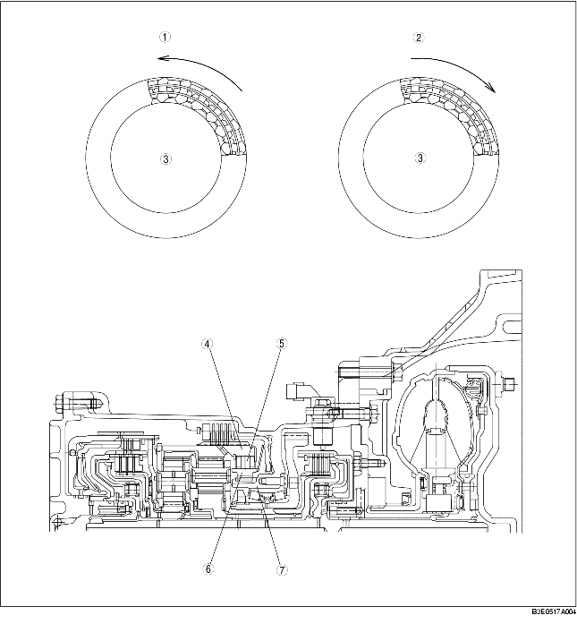

• De buitenring van de vrijloop (voorste ringwiel) kan vrij rechtsom (gezien vanaf de koppelomvormer) draaien, maar als de buitenring linksom draait kantelen de blokjes tussen beide ringen en worden deze geblokkeerd.
• De vrijloop blokkeert behalve het linksom draaien van het voorste ringwiel ook het linksom draaien van de achterste satellietwielen via de achterste satellietendrager.

.